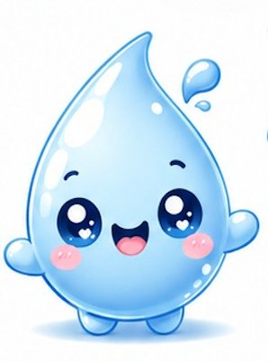

AquaScan es un dispositivo portátil que mide pH y TDS del agua al instante, con alertas visuales y dashboard web. Desarrollado para comunidades, municipalidades y empresas mineras.

Las comunidades rurales y periurbanas de Arequipa no tienen acceso a herramientas accesibles para saber si el agua que consumen es apta, especialmente en zonas afectadas por actividad minera.
Los métodos tradicionales de análisis son costosos, lentos y no están al alcance de comunidades rurales.
La actividad minera en Arequipa impacta directamente en la calidad del agua de comunidades cercanas.
Consumir agua no verificada genera enfermedades y carga al sistema de salud local.
Los gobiernos locales no cuentan con monitoreo en tiempo real para tomar decisiones de saneamiento.
AquaScan integra sensores electroquímicos de pH y TDS con Arduino UNO, pantalla LCD, alertas LED y un dashboard web accesible desde cualquier dispositivo.
Electrodo + módulo de medición electroquímica de alta precisión.
Medición de sólidos disueltos totales (partes por millón).
Visualización inmediata de resultados con módulo I2C integrado.
Verde = apto para consumo · Rojo = contaminación detectada.
Servidor Node-RED + MQTT + MariaDB. Acceso desde cualquier dispositivo.
Carcasa de madera MDF estructurada, ensamblaje profesional.
Mantenimiento mensual incluido en el plan de servicio.
Base electrónica confiable y de fácil mantenimiento técnico.
AquaScan opera en un modelo B2B + social, atendiendo a organizaciones que necesitan datos confiables del agua para tomar decisiones.
Zonas urbanas y rurales con acceso limitado a agua segura, juntas vecinales, comités de agua y familias preocupadas por la salud.
Necesidad: saber si el agua es aptaGobiernos locales y áreas de saneamiento y salud pública que necesitan monitorear y prevenir riesgos sanitarios en tiempo real.
Necesidad: monitorear riesgos sanitariosOperaciones con impacto hídrico que necesitan cumplir normativas ambientales y demostrar responsabilidad social empresarial.
Necesidad: cumplir normativas RSE145 encuestas aplicadas. 84% de intención de compra positiva. El punto de equilibrio se alcanza en el mes 3 de operaciones.
Inversión total de S/. 17,215 (35% financiado por banco). Recuperación de inversión proyectada en el mes 9.
| Concepto | Mes 1 | Mes 2 | Mes 3 | Mes 6 | Mes 9 | Mes 12 | Total Año 1 |
|---|---|---|---|---|---|---|---|
| Unidades vendidas | 15 | 18 | 22 | 24 | 24 | 24 | 271 |
| Total ingresos (S/.) | 9,414 | 11,672 | 14,632 | 17,637 | 19,437 | 21,237 | 205,255 |
| Total egresos (S/.) | 11,316 | 12,405 | 13,857 | 14,583 | 14,583 | 14,583 | 168,820 |
| Flujo neto (S/.) | (1,902) | (733) | +776 | +3,055 | +4,855 | +6,655 | +36,435 |
| Flujo acumulado (S/.) | (19,315) | (20,047) | (19,272) | (11,907) | +857 | +19,022 | +19,022 |
| Concepto | Año 1 | Año 2 | Año 3 | Año 4 | Año 5 |
|---|---|---|---|---|---|
| Demanda (unidades/año) | 283 | 325 | 374 | 430 | 494 |
| Ingresos totales (S/.) | 205,255 | 288,870 | 417,122 | 564,468 | 733,634 |
| Egresos totales (S/.) | 168,820 | 191,944 | 213,430 | 237,641 | 264,951 |
| Flujo neto (S/.) | 36,435 | 96,926 | 203,692 | 326,827 | 468,684 |
* Crecimiento de demanda 15% anual · Costos fijos crecen 5%/año (inflación) · CVU constante por economías de escala.
Diferenciación por tecnología, penetración en sectores municipales y mineros, y captación digital de leads calificados.
Objetivos SMART
Embudo de captación
LinkedIn, TikTok e Instagram con contenido educativo sobre agua y salud.
El usuario se interesa por el problema de la calidad del agua.
El usuario visita la web y completa el formulario de contacto.
Recibe información por correo y es calificado como prospecto.
Gerencia gestiona la alianza o venta directa del dispositivo.
Cada canal tiene un objetivo claro dentro del embudo de marketing.
Seguimiento a prospectos con información del sistema, casos de uso y pruebas piloto.
Generar confianzaContenido visual y educativo sobre problemas reales de contaminación del agua.
Awareness y tráficoVideos educativos cortos sobre calidad del agua, demostraciones del dispositivo en vivo.
Awareness jóvenesEscríbenos directamente a contacto@aquascan.pe para consultas, cotizaciones o solicitar una prueba piloto.
Contacto directoCompleta el formulario y nos ponemos en contacto para coordinar una demostración o prueba piloto gratuita.
También puedes escribirnos en Instagram o TikTok · @AQUASCAN1